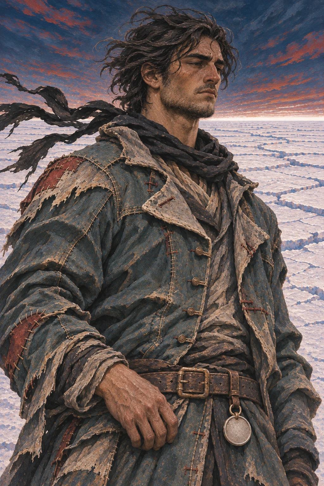

Получить зуб и ящик Ивы и удержать их до рассвета: без ящика у охоты не будет полного заряда.
Ива БессоннаяДемид Край

Верек ТихийГордея ВарРадан Косой
Если партия изменила план
Если ящик Ивы передали заранее
Спросите, кто видел передачу. Люди Чёрной Сети прибывают к оставленной стоянке и действуют по своим сведениям. Зафиксируйте, нашлась ли у них там лодка и кто сможет предупредить нынешнего хранителя ящика.
Повороты сюжета в этот вечер
Посеять сегодня
Гордея хочет его смерти. Её цена ночью — не уничтожить ящик, а «две бочки и слово, что вы его не продадите».
Поворот: Три рассказа об одном миге
Кажется, что убить Белореза невозможно: Томил попал и погиб, Ива три сезона била и не убила. На деле правда уже есть, только разбита на три рассказа об одном и том же миге: след говорит, когда и на кого он выходит, охотница — где открывается шов, капитан — как удержать гарпун. Всех трёх нет ни у кого.
В Пустой поварне Ива говорит то, чего не знал никто из капитанов: шов открывается на дальней стороне от шлюпки, на которую он идёт, пока зверь не нырнул. Положите рядом её слова, рассказ капитана и стену Острема — и пусть стол сложит сам: зверь приходит на черту, разворачивается пастью к ближней шлюпке и подставляет шов тому, кто стоит напротив, а гарпун со второй шлюпки на лине, привязанном к полозу, держит его наверху. Если какой-то части нет, финал всё равно возможен, только труднее.
После него: Восьмой вечер становится планом, а не надеждой: кто идёт приманкой, кто встаёт напротив пасти, к чему вязать линь. Цена прежняя: полный заряд сжигает ящик и зуб, попал он или нет.
Каменный островок чернеет на белом дне, и на нём — низкая поварня старой артели, сложенная из того же тёмного камня. Здесь когда-то кормили охотников перед выходом к Котлу: длинный стол, общий котёл, лавки вдоль стен. Теперь артели нет, а поварня осталась, и её зовут Пустой. Из трубы дым идёт прямо вверх, словно над солью нет ветра, и пахнет печёным хлебом — запах, от которого на белом дне кружится голова. На двери висит вдовий платок, выбеленный до цвета кости. Внутри тепло: печь протоплена, стол накрыт для гостей. На столе семь горстей соли в ряд, и в одну воткнут чисто вытертый гарпунный зуб. На стене — стойка с гарпунами без линей, на гвозде висит литое кольцо с надписью, а на доске рядом вырезаны три ряда зарубок. За столом сидит женщина в заштопанном фартуке, с платком, повязанным по-мужски, и медленно стучит костяшкой по древку старого гарпуна — раз, потом ещё раз.
Подготовка и роли
Вечер 6, день 6 похода. Перед сценой 1 сверьтесь со столом: дальше разговор о погибшем муже (Гаврил). Шкалы к концу вечера: осторожный 3/3, средний 9/4 (бой 8 — поворот, ночь 9), шумный 12/3 (удар уже был в вечер 4, метка стоит на 12). Сцена 2: вода +1 (схрон Ивы), выкуп ящика −3. Сцена 3: бой +1; дошла до 8 — поворот, стрелка назад; ночь по порядку: вода −1 (при 0–2 ещё −1), при 8+ +1, на 12 удар, если его ещё не было (след 11). БОЙ «Ночные гости» (обязательный, не дольше шести раундов): налётчики 4/5/6/8/9 при 3/4/5/6/7 игроках. Если в вечер 3 был бой на палубе или в вечер 4 промысел назван у колодца, число то же, но гости лезут и с кормы, а к шлюпке идут двое. Кончить бой можно словом: две бочки и слово, что ящик не будет продан. Сдавшихся не добивают. Верек-друг в раунде 2 бросает нож в своего и уходит за борт. Радан, если с отрядом, держит свою шлюпку. Ива в бою не участвует. Демид, если на борту, у ящика или у ворота. Отказ Иве без выкупа — исход «Шов лопнул» невозможен, скажите это без наказания. Голоса: Ива медленно, стучит по древку, промысел — «мы», вина — «я»; Демид — «Я там был, но…»; Гордея ровно; Верек — «простите». Её слова о Пороге — её убеждение. Гордея сейчас хочет: налётом вырвать слово при свидетелях; если ящик продадут, зверь останется на её следу.
Дерва: оборона ящика и рукопашная на палубе у гарпунов; гарпун Любавы лежит у борта.
Тарон: шлюпки и лини; слышит чужую лодку на соли до хруста сапога.
Сельма: Ива, семь горстей соли на столе и разговор о Гавриле; соль и платки на палубе.
Места 4–7: Ната держит палубу у ящика, когда лезут гости; Эйран разбирается в гнезде заряда вместе с Ивой; Воск называет цену ящика вслух и знает, сколько даст Оксинья; Рива говорит с Ивой о Гавриле, если Сельма занята. При 6–7 игроках, пока одни у Ивы, пара переставляет ладью и ставит дозор.
Сцена 1 · 50 минут
Стол для гостей
Печь дышит ровным жаром, на её краю остывает круглый хлеб с тёмной коркой, и в тепле соль на плащах тает мокрыми пятнами. Лавки вдоль стен широкие, рассчитанные на целую артель, — сейчас на них пусто. У стола одно место накрыто отдельно: кружка вверх дном и сложенный платок рядом. Старые охотники рассказывают, что в Пустой поварне печь не гасили никогда, чтобы ушедшие к Котлу видели дым и знали дорогу назад. Стук по древку обрывается. Женщина за столом поднимает глаза на дверь и медленно встаёт.
Ладья встаёт на соль у островка. На двери вдовий платок, внутри на столе семь горстей соли, в одной — гарпунный зуб. На стене стойка с гарпунами без линей, на гвозде снятый венец, на доске три ряда зарубок. Ива Бессонная сидит, повязав платок по-мужски, и стучит костяшкой по древку старого гарпуна. Если Демид на борту, он идёт первым и замирает у порога: «Я там был, но дальше порога не пойду. Это её дом, не мой». Ива встаёт им навстречу: «Садитесь. Соль — гостям, как положено. Зуб — тому, кто спросит». Спросите её о муже, об уходе или о ящике, и она отвечает с паузами: «Я три сезона стояла на зубе. Три раза он уходил. Один раз — с моим Гаврилом». Стук по древку. «Мы брали пластины. Мы называли это промыслом. А в ящик их клала я». Если отряд говорит, что уже сложил след и рассказ капитана, она молчит долго: «Значит, он и Гаврила ждал». Демид отводит взгляд: «У Котла меня не было. Про Гаврила я только слышал». Доску сезонов и снятый венец («Снятый зуб и доска сезонов») можно читать без Ивы. Раздатка «Три сезона Ивы». Осложнения по желанию ведущего: ладья стоит на тонкой корке у островка — переставить её на камень значит час работы всех, кто не говорит с Ивой, а оставить значит ночью у восточного борта пятно корки (гостям труднее нести ящик, вам — выйти на соль); и при воде 2 или меньше кто-то отдаёт свою долю другу — он начинает сцену 3 с помехой на Внимательность.
Выборы — и что будет дальше
Спросить Иву о Гавриле и об уходе из промысла: она рассказывает свой рассказ целиком
Ива рассказывает не торопясь, с паузами, и на каждом важном слове стучит костяшкой по древку. Три сезона на зубе. Три раза свет уходил в шов и возвращался. На третий раз Гаврил стоял на отходе — «дальше всех, как всегда: любил первым видеть перевал». Стук. «Я сняла венец, когда вернулась. Поздно. Я знаю, что поздно». Она не плачет и не просит жалости. «Садитесь ближе. Соль — гостям». Доска на стене молчит рядом с ней.
Прочесть доску со счётом сезонов и снятый венец самим, не тревожа хозяйку
Доска висит на гвозде у стойки: три ряда зарубок, по ряду на сезон. В каждом ряду одна глубокая — удар, — а через несколько мелких вторая глубокая, обведённая углём. В последнем ряду рядом с ней нацарапано имя. Венец на гвозде тусклый, с той же литой надписью, что на зубе «Чёрной Сети». Ива смотрит, как читают, и не мешает. «Счёт сам за себя говорит. Я только рубила», — говорит она, когда отряд отходит от стены.
Рассказать Иве, что отряд уже знает о черте и о шве, и посмотреть, что она ответит
Ива слушает до конца, не перебивая. Когда звучат слова «черта» и «восток», костяшка замирает над древком и не опускается. Долгая пауза. «Значит, он и Гаврила ждал». Она встаёт, подходит к доске и проводит пальцем по последнему ряду. «Я думала — злость. Раненый зверь. А он учился». Потом поворачивается: «Про шов вы знаете не всё. Он открывается на дальней стороне, пока зверь не нырнул. Это я видела сама». И садится обратно.
Позвать Иву на ладью до Котла: она отказывается или соглашается, механики у этого нет
Ива долго смотрит на того, кто позвал, потом на дверь, где висит вдовий платок. «Я три сезона ходила к Котлу. Хватит». Или, если стол решит иначе, встаёт, снимает фартук и берёт со стойки старый гарпун без линя: «Не воевать. Смотреть. Чтобы было кому рассказать Гаврилу, что видела». В любом случае она благодарит одной короткой фразой: «Спасибо, что позвали, а не спросили». И идёт ставить воду.
Проверка и путь без броска
Проверки нет: что Ива не просит прощения и не прощает себя, видно по её словам — про промысел она говорит «мы», про вину «я». Шкалы в сцене не меняются: ведущий вслух называет след и воду по листу. Если вода 0, у каждого героя с начала вечера одна степень истощения. Перед сценой — сверка со столом: дальше речь о погибшем муже.
Если не получилось
Если о Гавриле спросили слишком резко, Ива кладёт ладонь на древко и замолкает. Рассказ всё равно доходит: она кивает на доску, и отряд читает её, а раздатка «Три сезона Ивы» выдаётся. Но душевного разговора не будет, и Ива говорит с отрядом только о деле.
Сцена 2 · 50 минут
Полный заряд
Задняя комната поварни тесная и холодная: печной жар сюда не доходит, и дыхание здесь видно. На стойке лежит гарпунный зуб без кольца, тяжёлый, в кожухе, сшитом из старых вдовьих платков. Рядом на полу стоит окованный ящик, пересыпанный крупной солью, и железные углы его стёрты до блеска. К гнезду заряда привязана деревянная бирка с выжженными строками, мелкими и ровными. Когда-то здесь держали запас артели — сухари, бочки, смолу для полозьев; на стенах до сих пор торчат пустые крюки. Хозяйка входит следом, ставит лампу на ящик и кладёт ладонь на бирку.
В задней комнате на стойке лежит зуб без венца, тяжёлый и холодный, в кожухе из вдовьих платков. Рядом стоит окованный ящик, пересыпанный солью. На гнезде заряда висит бирка («Бирка на гнезде заряда», раздатка «Бирка зуба без венца»). Ива читает её вслух, на каждом числе стуча костяшкой по древку: «Один ящик — двенадцать пластин. Один выпуск. Потом зуб и ящик сгорают — попал, не попал. Заряд идёт только в шов. А шов разведён, когда в нём два гарпуна. Три. Не раньше. Я узнала это поздно». Она ничего не обещает: «Я не обещаю, что он ляжет. Я обещаю, что ящик полный». Потом ставит условие: «Ящик отдам. Премию — нет. Премия — вдовам. Это не плата за прощение, это просто счёт». Из-под половицы она достаёт бочку из своего схрона: «Это не плата. Вы будете пить, а не торговаться». Вода +1 (например, было 4, стало 5; выше 8 не бывает). Она знает цену: «Ящик стоит всей вашей премии. Оксинья купит его не торгуясь. Поэтому и условие». Не хотите условия — выкупите: три бочки, и ящик ваш без слова, премия тоже ваша, а продать его можно хоть завтра. Отказ и от того и от другого — полного заряда не будет, и ведущий говорит это прямо. Осложнения по желанию ведущего: кожух протёрся, и на новый нужен один из платков Сельмы (приманок у вас станет меньше); и Демид, если он с вами, просит остаться у Ивы — тогда в финале некому подбирать лежащих. Остаётся решить, где поставить ящик на ладье. Ночью придут за ним.
Выборы — и что будет дальше
Принять условие Ивы: большая премия за гибель зверя уходит вдовьим домам; взять зуб и ящик.
Ива кивает один раз — коротко, как кивают, закрыв счёт. «Хорошо». Она сама переносит зуб на стойку, сама проверяет кожух из вдовьих платков, сама пересыпает ящик свежей солью. Не говорит ни «спасибо», ни «удачи». Только у двери, когда ящик уже на ладье: «Сорок домов. Скажите им, чьё это. Не моё имя — Гаврила». Тот, кто держит ящик, чувствует его вес иначе, чем мгновение назад.
Выкупить ящик без условия за три бочки (только если они есть): премия, если будет, ваша, ящик можно и продать Оксинье.
Три бочки катят в поварню, и Ива пересчитывает их сама, стуча костяшкой по каждой. «Три. Честно». Ящик теперь ваш — без условий, без слов, без чужого имени. Его можно поставить в зуб, а можно отвезти Оксинье, и она купит не торгуясь. Ива не спрашивает, что вы выберете. «Остальное — ваш счёт, не мой. Я своё уже посчитала». Бочкарь вычёркивает три клетки, и в поварне становится тихо.
Отказаться от обоих: бочка Ивы всё равно ваша, но полного заряда не будет.
Ива не уговаривает. «Ваше право». Ящик остаётся под половицей, зуб — в кожухе на стойке. Бочка из схрона всё равно стоит у двери: «Это не плата. Вы будете пить». Охота пойдёт на метках и гарпунах, без полного заряда, и Ива говорит это прямо, без упрёка, как говорят о погоде на завтра. Ночные гости всё равно придут — за бочками, если не за ящиком. «Он слышит всех одинаково», — бросает она и закрывает дверь в заднюю комнату.
Поставить ящик посередине палубы, на виду, или на корме у западного края — дальше от восточного борта, но труднее выносить.
Посередине палубы ящик на виду у всех и у всех под рукой: его легко защищать и легко схватить. На корме, у западного края, он дальше от восточного борта, но выносить его оттуда тяжело, если придётся бежать. Решают вслух, споря. Ива, слушая, вставляет одно: «Где бы он ни стоял — стойте рядом. Ящик без людей — просто ящик». Его ставят, засыпают солью, накрывают брезентом. Теперь остаётся ждать ночи.
Проверка и путь без броска
Проверки нет: гнездо заряда Ива показывает сама и читает бирку вслух. Шкалы: вода +1 (бочка Ивы); выкуп — вода −3; след ±0. Зуб («Зуб Ивы») и ящик («Полный ящик») отряд получает, если принял условие или выкупил ящик; ведущий записывает место ящика и называет его вслух.
Если не получилось
Если стол не может решить, Ива не торопит: «Решите до темноты. Ночью за ним придут». Кто попробует прижать пластину к гнезду сам, увидит белую искру по кожуху; ничего не сгорает, но Ива убирает его руки: «Не так. Смотри».
Сцена 3 · 50 минут
Ночные гости
Тень островка к закату ложится на дно длинным чёрным языком, а соль вокруг становится ржавой. На мачте висит мокрый от росы вдовий платок, за бортом тускло светится лампа в окне поварни. С востока ночь приходит на дно раньше, чем с запада, и сборщики говорят, что в ту сторону после заката долго смотреть не стоит: глаза начинают видеть то, чего нет. Корка вокруг ладьи остывает и тихо потрескивает. Огней «Чёрной Сети» не видно нигде. Ветер стихает, и в наступившей тишине слышно каждое движение на палубе. Где-то далеко на востоке коротко хрустит соль — и снова тихо.
Закат красит соль ржавчиной; на мачте мокрый вдовий платок, за бортом тусклая лампа Ивы. Ящик стоит там, где его поставили. Если Верек друг, он приходит на закате по корке, оглядываясь на восток: «Простите. Они пойдут без огня, с востока. Ящик не держите у борта. Я не хочу, чтобы это было на мне». Глубоко ночью ведущий говорит дозорному: «На носу хрустнула соль под чужим сапогом». Через восточный борт лезут люди «Чёрной Сети» (состав — по встрече), лица замотаны платками, у каждого два ножа для пластин. Из лодки ровно говорит Гордея: «Ящик — или две бочки и слово, что вы его не продадите. Мне нужна тишина, не ваши жизни». Гости сбивают с ног тех, кто стоит у ящика; один идёт к шлюпке резать лини. В раунде 2 Верек-друг бросает нож в своего и шепчет: «Прости, Гордея» — и уходит за борт. Если он не друг, он среди гостей и шепчет из-под платка, проходя мимо: «Простите. Я только делаю, что велят». Гости на половине своих прыгают за борт. Гордея бросает вслед из темноты: «Он слышал нас всех. Спите теперь, если сможете». Светает к концу раунда 6.
Выборы — и что будет дальше
Держать ящик вдвоём и отбивать тех, кто лезет к нему
Двое встают у ящика спина к спине, и всё остальное на палубе перестаёт существовать. Гости лезут к ним с двух сторон, ножи для пластин блестят в свете лампы. Сбить с ног, оттолкнуть, удержаться — снова и снова. «Мне нужна тишина, не ваши жизни!» — ровно говорит Гордея из темноты. Ящик стоит. Но пока двое держат его, шлюпка у борта остаётся без защиты, и кто-то из гостей уже тянется к линям.
Бросить всё и защитить шлюпки, жертвуя ящиком
Отряд бросается к бортам, где гости уже режут лини. Верек, если он среди гостей, пятится от шлюпки: «Простите… нам нужен был только ящик». Шлюпки — это финал, приманка и путь домой. Ящик остаётся посередине палубы без защиты, и двое гостей подхватывают его, пересыпанный солью, и тащат к восточному борту. Его ещё можно вернуть — потом, торгом или чужой рукой. Шлюпку, ушедшую в соль, не вернёт никто. Решение принято, и его цену назовут на рассвете.
Выставить стойку гарпунов у борта и драться на палубе, у мачты, держа гостей в одной точке
Стойку гарпунов разворачивают поперёк палубы, зубьями наружу, и она становится забором. Гостям приходится лезть через неё или в обход, и бой сжимается у мачты, в одном месте, где всё видно и всех слышно. Тесно, жарко, скользко от рассола. «Держи линию!» — и линию держат. Гости мешают друг другу, и ни один не может пройти к ящику или к шлюпке, не встретив кого-нибудь из отряда лицом к лицу.
Крикнуть Гордее в темноту и торговаться, пока гости ещё на борту
«Гордея! Поговорим!» — голос уходит в темноту, и на палубе на миг становится тише. Из лодки она отвечает ровно, будто они сидят у одного колодца: «Ящик — или две бочки и слово, что вы его не продадите». Торг идёт под звон ножей: гости не останавливаются, пока она не велит. Можно выиграть время, можно выторговать цену. А можно услышать в её голосе то, чего она не говорит вслух: ей нужен не ящик, а чтобы он не попал к Оксинье.
Проверка и путь без броска
Бой «Ночные гости», палуба ладьи, обязательный. Цель отряда: сохранить ящик и все шлюпки (три при 5–7 игроках). Мудрость (Внимательность) Сл 12 у дозорного: услышать лодку до хруста; без броска, если Верек предупредил. Шкалы: бой — след +1 (средний стол: было 7, стало 8 — поворот, ведущий рисует стрелку назад). Ночь: вода −1; при следе 8 и выше ещё след +1; при следе 0–2 вода ещё −1. Каждая бочка за бортом — вода −1. Шлюпка потеряна — шлюпки −1; последнюю не уводят, а пробивают: она ходит только на шестах. Если метка дошла до 12 и удара ещё не было — ночной удар: шлюпка (не последняя), две бочки или ранение дозорного, затем след 11; если удар уже был, метка стоит на 12. Кончить бой словом можно в любом раунде — по встрече.
Если не получилось
Проигранная схватка не обрывает охоту. Если ящик ушёл за борт, вечер 7, сцена 1 открывается торговлей: Верек (если друг) приносит его ночью сам; иначе Гордея отдаёт ящик за две бочки и слово, что он не будет продан. Откажетесь — ящика нет, полного заряда не будет. Срезанная шлюпка — шлюпки −1; обломки тонут в рассоле до рассвета.
Снятый зуб и доска сезонов
На стойке в поварне лежит стяжной зуб без венца, а снятый венец висит на гвозде. На стене доска со счётом трёх сезонов.
Что можно установить
Ива знала назначение венца и сняла его. Доска считает три сезона и три удара, после которых зверь уходил живым. Зуб без венца можно зарядить одним полным зарядом.
Получение
Войти в поварню и осмотреть стойку и доску. Спросить Иву о сезонах — она отвечает без броска.
Запасной путь
Если Ивы нет рядом, записи на доске и бирки у стойки читаются сами. Ива стучит костяшкой по древку гарпуна и говорит: «Читайте. Мне не стыдно, что написано».
Бирка на гнезде заряда
На гнезде заряда, под кожухом из вдовьих платков, привязана деревянная бирка с выжженными строками; буквы мелкие и ровные. Рядом стоит окованный ящик, пересыпанный крупной солью, тяжёлый даже на вид.
Что можно установить
Один полный ящик даёт один полный заряд. При выпуске сырьё и зуб сгорают, попал заряд или нет. Заряд входит только в шов, разведённый двумя-тремя гарпунами.
Получение
Осмотреть гнездо и прочесть бирку. Анализ Сл 10 помогает понять устройство; без броска Ива показывает и читает вслух.
Запасной путь
Если бирку не заметили, Ива читает её вслух. Условие Ивы: большая премия за гибель зверя уходит вдовьим домам, а не в чьи-то доли.
Изменения после решений
Если Верек стал другом в вечере 3 (оттиск и пластину получили мирно, слово сдержано) → Он предупреждает на закате, внезапности нет; в раунде 2 бросает нож и уходит за борт, одним гостем меньше.
Если Верек не друг (был бой «Палуба «Чёрной Сети»» или слово нарушено) → Дозорный застигнут врасплох в раунде 1, Верек среди гостей и не предупреждал; гости лезут и с кормы, к шлюпке идут двое (число гостей по встрече не меняется).
Если Ящик унесён за восточный борт → В вечере 7, сцена 1: Верек (если друг) приносит ящик ночью; иначе Гордея отдаёт его за две бочки и слово, что ящик не будет продан; отказ — полного заряда нет.
Если Шлюпку срезали или бочки ушли за борт → Шлюпки −1, каждая бочка −1 по воде; в финале одной шлюпкой меньше, и приманку придётся делать из последней.
Если Отряд отказал Иве и не выкупил ящик → Зуб и ящик не получены: «Шов лопнул» невозможен, но бочки целы. Ночные гости берут бочки (каждая за бортом — вода −1), охота идёт на метках и гарпунах. Если ящик выкуплен, премия ваша, а Гордея в бою кричит: «Продадите — я узнаю».
Выдать в нужный момент
Три сезона Ивы — Вечер 6, сцена 1: когда Ива рассказывает или отряд читает доску сезонов.
Ящик под брезентом — или пустое место там, где он стоял; зуб в кожухе из вдовьих платков, на палубе ещё блестит рассол там, где лезли ночные гости. Лампа Ивы тлеет на островке, вдалеке гудит корка, и восток понемногу светлеет. Ведущий называет след и воду по листу и отмечает карандашом оставшиеся шлюпки; если ящик потерян, это тоже отмечено на листе. Запишите, что отряд пообещал Иве о премии кто стоял у ящика, когда пришли гости, и на чьей стороне ночью оказался Верек. Ночь кончается, как только ведущий показывает: светает. Впереди, на востоке, ржавой полосой проступает Рыжий разрез — туда лежит дорога к Котлу.